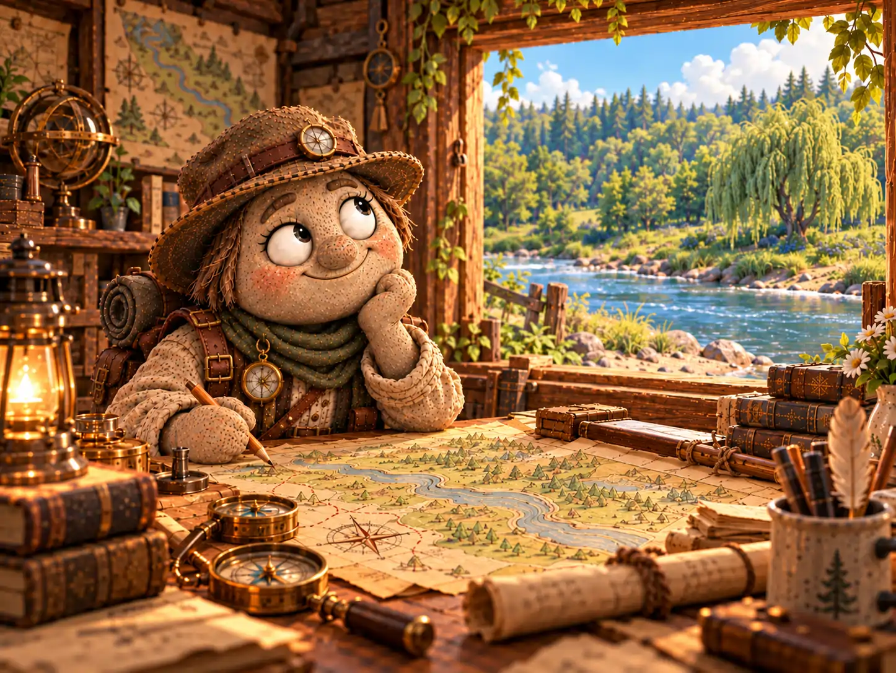
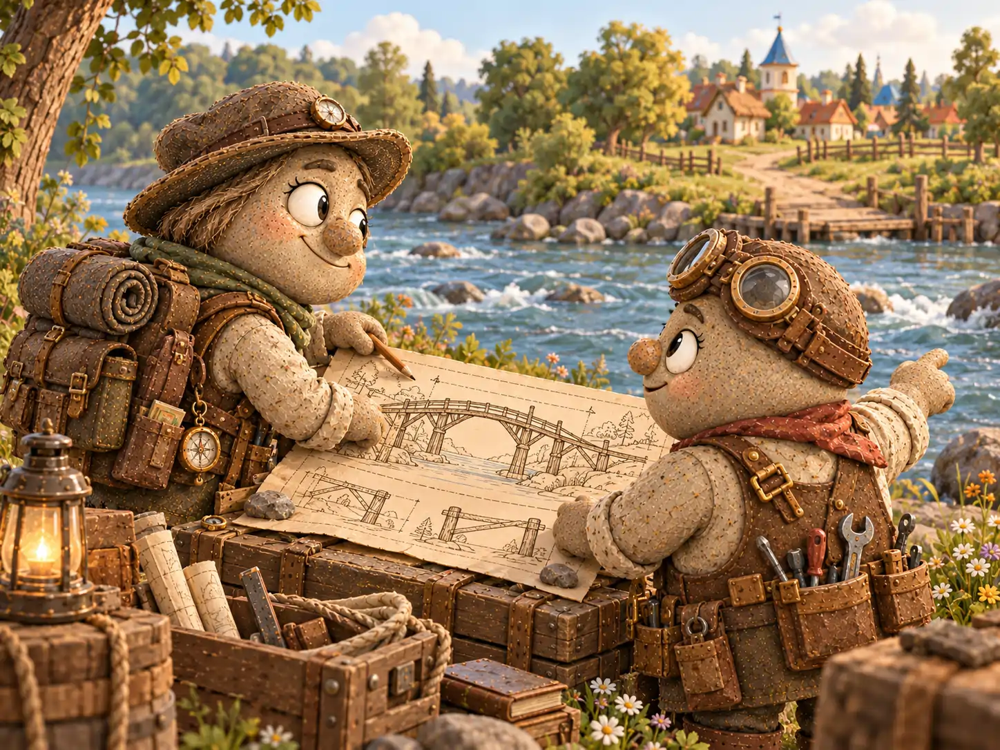
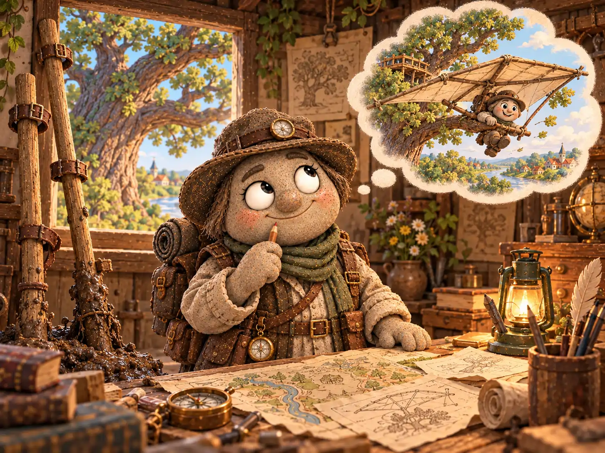
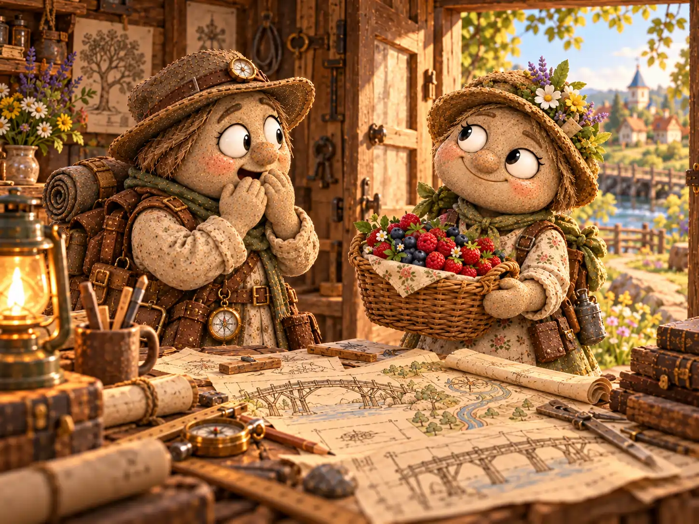

У Фомы Знаменского в доме было трудно найти свободный стол. На одном лежала карта лесных троп, на другом — схема деревенских колодцев, а третий занимал огромный лист с холмами, оврагами и рекой. Все листы были испещрены аккуратными линиями и пометками. Фома мог часами сравнивать расстояния, измерять повороты и выяснять, почему дорога, которая кажется прямой, на деле приводит к чужому огороду.
Картограф он был хороший. Благодаря его работе жители знали, где весной размывает тропу, какой путь до мельницы короче и как обойти заболоченный луг. Но стоило Фоме взяться за новую задачу, как он начинал придумывать решение столь подробное, что на само дело времени иногда уже не оставалось.
Была у него и большая мечта — доказать, что земля плоская. Пока доказательства никак не складывались, но Фома не унывал: он считал, что для серьёзного вывода просто нужно составить ещё несколько очень точных карт.
Однажды он заканчивал карту окрестностей для Анфисы Мироновой. Учительница собиралась брать её на прогулки с учениками и просила обозначить не только дороги, но и растения, которые можно встретить по пути. До завершения оставалась одна маленькая отметка: у старой ивы на противоположном берегу росла редкая синяя ягода. Василиса Камушкина говорила, что в Галькино больше нигде такой нет.
Фома не любил наносить на карту то, чего не видел собственными глазами. Ему хотелось принести ягоду, сравнить её с описанием и точно отметить кусты. К тому же карту он обещал отдать Анфисе уже завтра.

✦ ✦ ✦
Утром Фома отправился к реке с измерительной верёвкой, блокнотом и карандашом. Вода неслась между камнями довольно быстро, а дно у его берега было илистым. Напротив, на солнечном склоне, виднелась старая ива. Под ней темнели нужные кусты.
— Отлично, — сказал Фома. — Цель установлена. Осталось выбрать способ добраться.
Первым делом он решил построить мост. Мысль была основательная: сегодня мост поможет ему, а завтра пригодится и всей деревне. Фома измерил ширину реки, наметил места для опор и вернулся домой чертить конструкцию. К полудню он уже знал, какой длины понадобятся балки и сколько досок потребуется на настил.
За советом он зашёл к Кузьме Лаптеву. Изобретатель внимательно посмотрел на чертёж, похвалил расчёты и спросил:
— А опоры кто ставить будет?
— Разумеется, мы найдём помощников.
— И дерево надо подготовить. И крепления сделать. Даже если все согласятся, к завтрашнему дню не успеем.
Фома вздохнул. Кузьма был прав: хороший мост нельзя строить второпях. Картограф свернул чертёж и аккуратно написал на полях: «Для общего пользования. Вернуться к проекту осенью».

✦ ✦ ✦
Теперь Фоме требовалось решение поменьше. Он вспомнил о ходулях: с ними можно не намочить ноги и, возможно, перешагнуть мелкие участки реки. Картограф даже нашёл в сарае две длинные жерди и испытал одну на берегу.
Жердь тут же ушла в мягкий ил почти на ладонь. Фома посмотрел на течение, потом на высокие берега и честно признал: изобретение годится для сухой деревенской улицы, но никак не для такой реки.
— Зато теперь у меня есть точные сведения о грунте, — утешил он себя и занёс наблюдение на карту.
Когда Фома поднял голову, взгляд его остановился на раскидистом дубе выше по течению. Ветви нависали над склоном. А что, если не переходить реку, а перелететь?
На следующем листе появился планер: лёгкая рама, широкие крылья, место для пилота. На бумаге всё выглядело убедительно. Но уже при первых расчётах стало ясно, что нужно раздобыть прочную ткань, испытать крылья, изучить ветер и найти безопасную площадку для посадки. Между тем в саду за окном не шевелился даже самый тонкий листок.
Фома отложил карандаш. Идея ему нравилась. Только ягоды были нужны завтра, а не после первых успешных лётных испытаний.
К вечеру на столе лежали чертёж моста, заметки о ходулях и схема планера. Ни один из способов не был совершенно бесполезным. Но на противоположном берегу ягоды оставались на месте, а дома у Фомы — пустая корзинка.

✦ ✦ ✦
В дверь постучали. На пороге стояла Василиса Камушкина с корзинкой и слегка запачканными землёй сапогами.
— Фома, ты ведь искал синюю ягоду у старой ивы? — спросила она.
Картограф растерянно посмотрел на корзинку. На дне лежала целая горсть знакомых ягод, ещё влажных после дороги.
— Именно её! Но как ты попала на тот берег?
— Через брод, — ответила Василиса. — Чуть выше по течению, за камышами. Летом вода спала, там теперь можно перейти по мелким камням. Я сегодня ходила проверять растения у берега и заодно набрала тебе ягод.
Фома молчал. В его старой карте на месте брода была нарисована глубокая протока. Весной она действительно была глубокой. Просто за лето река изменилась, а Фома успел изучить десяток способов её пересечь, ни разу не пройдя вдоль берега до камышей.
— Почему ты не сказал мне сразу, что тебе нужны ягоды? — поинтересовалась Василиса.
— Я хотел решить задачу самостоятельно, — признался Фома. — И, кажется, решал немного не ту задачу.
Василиса улыбнулась.
— Твой мост, между прочим, пригодился бы весной, когда здесь снова поднимется вода. Но сейчас для ягод хватает брода.
Фома оживился. Он быстро достал карту, попросил Василису показать тропу и выслушал, у каких камней лучше спускаться к воде. Она знала местность по растениям, а он умел превращать такие наблюдения в понятные обозначения. Через полчаса на карте появился новый летний переход и предупреждение: во время паводка не пользоваться.

✦ ✦ ✦
На следующее утро Анфиса получила обещанную карту. Рядом со старой ивой были обозначены ягодные кусты, а выше по течению — брод, о котором прежде знали лишь те, кто часто ходил к реке.
— Очень полезная карта, — сказала учительница. — Откуда ты узнал про переход?
— От Василисы. Я провёл целый день за расчётами и чуть не забыл, что местность можно не только изучать по чертежам, но и расспрашивать тех, кто там бывает.
Карту Анфиса забрала для прогулок, а проект моста Фома передал Кузьме — тот пообещал вернуться к нему перед весенним разливом. Сам картограф отправился домой разбирать записи. Все три замысла он сохранил: даже несостоявшиеся планы иногда бывают полезны.
На столе его ждала ещё одна большая работа — доказательство того, что земля плоская. Фома разложил чистый лист, посмотрел в окно на реку и задумался.
— Начну, пожалуй, с наблюдений, — решил он. — А то опять построю мост там, где нужен вопрос.
Он взял карандаш. Потом положил его обратно и пошёл к Василисе — узнать, не замечала ли она ещё чего-нибудь, чего пока нет на его картах.
В Почтовом архиве Галькино после этого появилась запись:
«Фома Знаменский, картограф. Для похода за одной ягодой разработал проект моста, проверил возможность ходьбы на ходулях и рассчитал планер. Ягоды принесла Василиса. Карта стала точнее, когда Фома добавил к своим расчётам наблюдения тех, кто действительно ходит по этим дорогам».